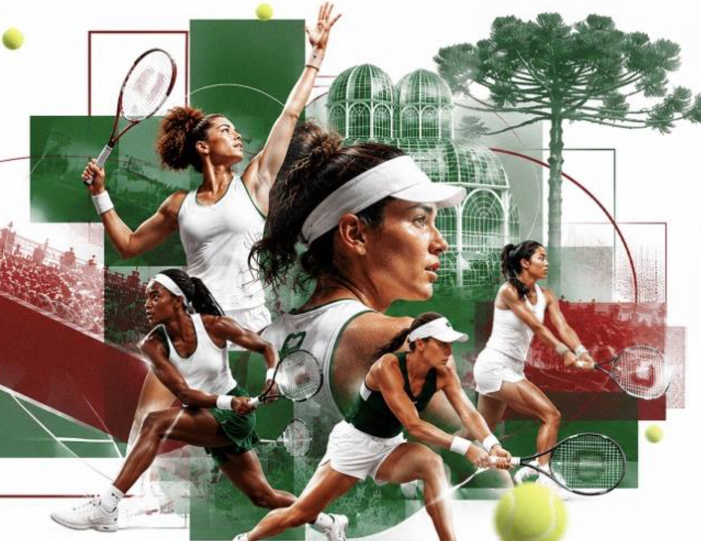
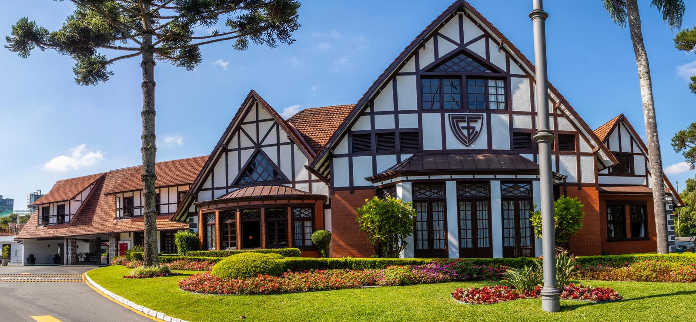

Hospitality Center
Lounge VIP, relacionamento, alimentação premium, happy hour e reuniões.

Follow Up
Junho 2026

01
Principais aprendizados da visita ao Clube Graciosa e pontos que impactam diretamente a implantação do evento.
Pendências Graciosa
02
Validação da ocupação preliminar do evento dentro do Clube Graciosa.
Lounge VIP, relacionamento, alimentação premium, happy hour e reuniões.
Ativações, gastronomia, convivência e experiências para o público.
Espaço de relacionamento e exposição para marcas parceiras.
Ambiente exclusivo para convidados, patrocinadores e networking.
Operações gastronômicas distribuídas ao longo do fluxo principal.
Primeiro ponto de contato e recepção institucional do evento.
Ativação de relacionamento corporativo durante a semana.
Jantar oficial do torneio e experiência de alto valor institucional.
03
Principais pontos de impacto visual do evento, do clube à cidade.
Portal de entrada, comunicação institucional e área de boas-vindas.
Bandeiras, totens, comunicação aérea e direcionamento.
Aplicação premium, painéis e ambientação.
Backdrops, branding e sinalização institucional.
Aeroporto, Pátio Batel, MON e pontos icônicos de Curitiba.
04
Definição da linguagem visual e do padrão construtivo para operações e marcas.
Modular, premium, de fácil montagem e com visual internacional.
Integração com lounge, operação premium e ambiente de relacionamento.
Visual padronizado, integração à jornada e fácil operação.
05
Canais mapeados para divulgação do evento e construção de presença na cidade.
06
Uma semana de relacionamento, conteúdo, cidade e experiência ao redor do torneio.
Prefeitura de Curitiba e Campo de Golfe Graciosa.
MON, com temas como liderança feminina, negócios, inovação e tecnologia.
Pátio Batel, com mini quadra, fotos e ativações com o público.
Jantar oficial do torneio no Salão Nobre Graciosa.
Festa oficial do torneio em local a confirmar.
Aeroporto, Pátio Batel, MON e pontos icônicos da cidade.
07
Ativos disponíveis para patrocínio, relacionamento e presença de marca.
Hospitality Center, Área VIP e Boxes Corporativos.
Golf Invitational, WTA Talks, CEO Networking, Gala Dinner e Players Celebration.
Stands, ativações e experiências de marca.
Ativações urbanas, Meet & Greet e Fan Experience.
08
Base de cálculo dos 12% e 15%, fee fixo de gestão, fee executivo, fluxo financeiro, contratos e responsabilidades.
Encerramento
Transformando um torneio em uma plataforma de relacionamento, experiência e negócios.